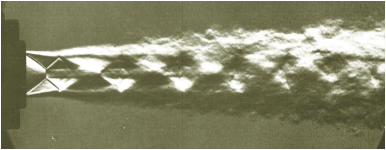

Areas of research
Translations: ruThe technologies include theoretical models, numerical algorithms, software platforms, and experimental approaches that will allow the team to establish fundamental physical principles for:
Prospective spacecraft aerothermodynamics
This is the caption of the figure.

